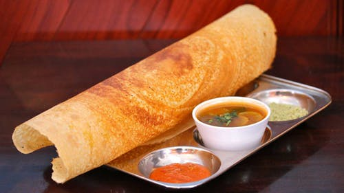

Dosa with different fillings combined with sambhar and coconut chutney is a blessing.

chapati rolls with mouth watering fillings with added salad is a adequate snack offering for one.
Chicken mughlai ,pomphret curry with rumali roti and biryani is a must eat here at BRESCA.
Fried paneer and Tofu with mint leaves and corriander and neem,tastes out of this world.